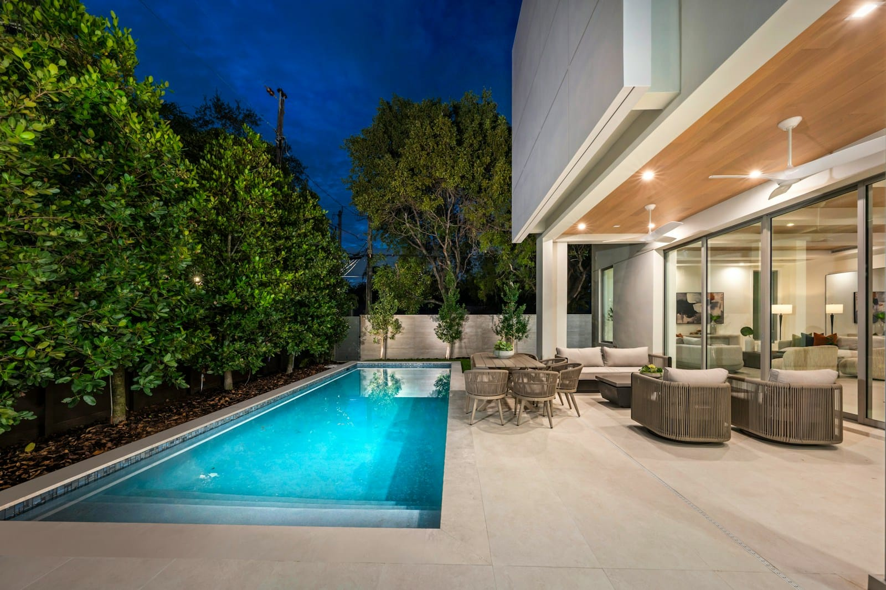

Outdoor Audio for Patios and Pools in the Bahamas
Outdoor-rated speakers, zones and placement: how to get great sound outside without disturbing the neighbors.
Sonos integration
Sonos is the easiest way to put music in every room. We take it further: in-ceiling and outdoor speakers powered by Sonos amplifiers, reliable Wi-Fi so it never drops out, and integration with Control4 so a keypad or a scene can start the music.

Sonos is excellent out of the box, and most people know it as a set of wireless speakers. In a designed system it becomes the streaming engine for the whole property: Sonos amplifiers drive architectural in-ceiling speakers in the kitchen, living room and bedrooms, weather-rated speakers on the terrace and by the pool, and a soundbar or surround system under the television. Everything is grouped, zoned and controlled from the Sonos app, a Control4 keypad or a voice assistant.
We design Sonos systems that avoid the common frustrations, chiefly dropouts and speakers that disappear from the app. Those are almost always network problems, so every Sonos project includes a network review or upgrade. Sonos is also our usual platform within larger multi-room audio and video systems and integrates with Control4 for scene control.
How we work
We walk the property and plan speaker positions and zones for each room and outdoor area, choosing architectural or freestanding speakers to suit.
A stable, well-designed network is the difference between Sonos that works every time and Sonos that needs rebooting. We address it before adding speakers.
Amplifiers in the rack, speakers in ceilings and walls, and integration with Control4 so the system is usable from keypads and scenes as well as the app.
Designed for the islands
Yes. Existing Sonos products join the new system; we add architectural speakers, amplifiers and a proper network around them.
Yes. Sonos integrates with Control4, so music can be started from keypads and included in scenes while the Sonos app remains available for browsing.
Almost always the network. Concrete construction, a single router and interference are the usual causes. A wired connection for key components and professional Wi-Fi fixes it in most homes.
Related services

Outdoor-rated speakers, zones and placement: how to get great sound outside without disturbing the neighbors.

One router rarely covers a block-and-concrete home. Here is how a wired, multi-access-point design solves it.

Smart lighting, climate, security, entertainment, and the Control4 hub that ties it all together.
Tell us about your property and goals, and we’ll recommend the right approach.